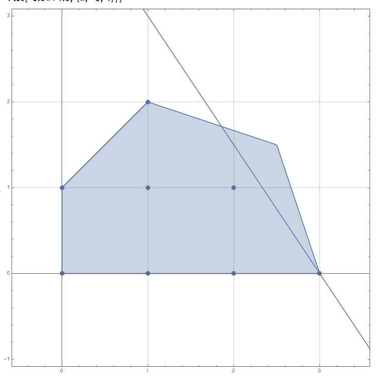
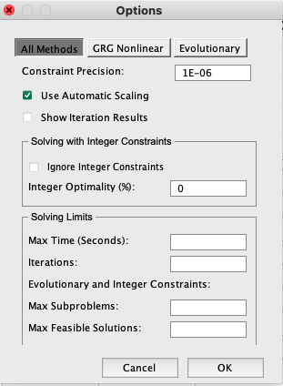
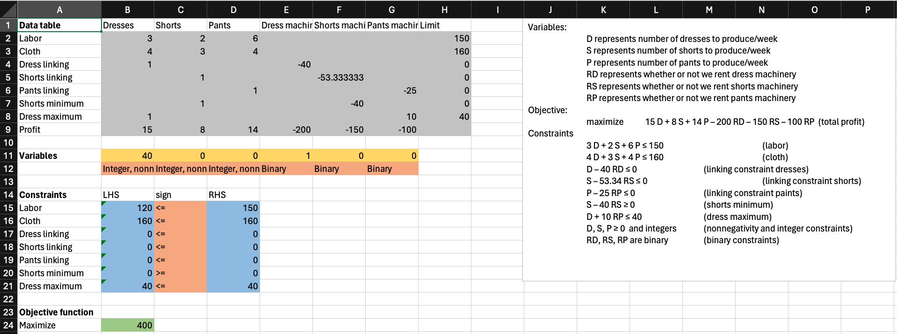
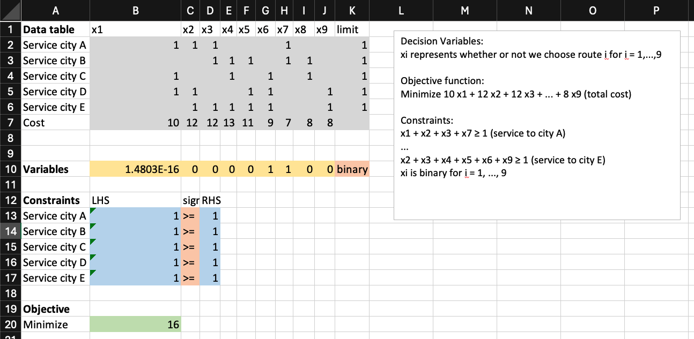
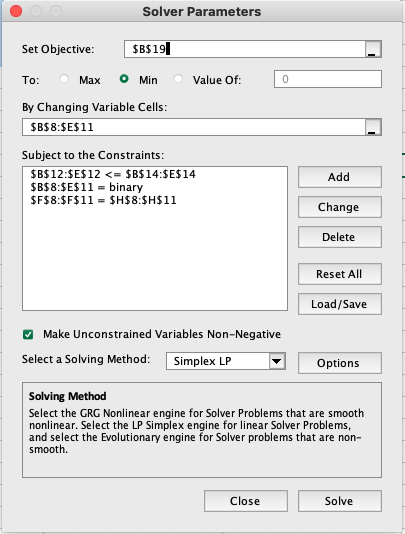

Integer programming
MGMT 306
Purdue University
What is an integer program?
Motivation for Integer Programming
- In a LP, the variables can be set to any real value including fractional values
- In an Integer Linear Program, we are allowed to constrain variables to be
- integers: …, -3, -2, -1, 0, 1, 2, 3, …
- binary: 0 or 1
- Integer programs allow us to model variables that are naturally
- integers, e.g., # of bikes to make
- binary, e.g., should we accept a contract yes/no
Integer Linear Program
- An integer linear program (ILP), or integer program (IP) for short, is a model (decision variables, objective function, constraints) where
- Objective function is linear
- Some variables are constrained to be integers or binary
- Remaining constraints are standard form linear constraints
What does an integer program look like?
\[ \begin{aligned} \max\quad& 3x_{1} + 2x_{2}\\ \text{s.t.}\quad& 3x_{1} + x_{2} \leq 9\\ & x_{1} + 3x_{2} \leq 7\\ & -x_{1} + x_{2} \leq 1\\ & x_{1}, x_{2} \geq 0 \text{ and integer}\\ \end{aligned} \]
- Things to notice:
- Objective function is linear in variables
- Some constraints of the form \(x_i\) integer or \(x_i\) binary
- All other constraints are linear

Why do we care about integer programs?
- Compared to LPs, IPs have more modeling power (more accurate models), but are also more difficult to solve
LP Relaxations of IPs
IPs have LP relaxations
- Given an IP, we can relax (drop) the IP constraints to get an LP \[ \begin{aligned} \max\quad& 3x_{1} + 2x_{2}\\ \text{s.t.}\quad& 3x_{1} + x_{2} \leq 9\\ & x_{1} + 3x_{2} \leq 7\\ & -x_{1} + x_{2} \leq 1\\ & x_{1}, x_{2} \geq 0 \text{ and integer} \end{aligned} \]

IPs have LP relaxations
\[ \begin{aligned} \max\quad& 3x_{1} + 2x_{2}\\ \text{s.t.}\quad& 3x_{1} + x_{2} \leq 9\\ & x_{1} + 3x_{2} \leq 7\\ & -x_{1} + x_{2} \leq 1\\ & x_{1}, x_{2} \geq 0 \end{aligned} \]
- The optimal value of the LP relaxation will be better than the optimal value of the IP (larger for maximize, smaller for minimize)
- Rounding the LP optimal solution is not guaranteed to find the ILP optimal solution

Capital budgeting example
Problem Description
- The local parks department would like to construct new rec facilities to encourage citizens to be healthier. It can build at most one of each facility type. They want to maximize expected daily use.
- They have a budget of $800,000 and 13 acres of land.
- We cannot build both the swimming pool and tennis center.
- If a tennis center is built, then a gym must be built.
| Expected daily use | Cost ($) | Land req’d (acres) | |
|---|---|---|---|
| Swimming pool | 450 | 300,000 | 2 |
| Tennis center | 150 | 100,000 | 3 |
| Athletic field | 500 | 250,000 | 7 |
| Gymnasium | 550 | 400,000 | 3 |
IP Model Variables and Objective Function
- Variables \[\begin{aligned} &S &&\text{whether we build a swimming pool}\\ &T &&\text{whether we build a tennis center}\\ &A &&\text{whether we build an athletic field}\\ &G &&\text{whether we build a gymnasium} \end{aligned}\]
- Objective function \[\max \quad 450 S + 150 T + 500 A + 550 G \quad \text{(expected daily use)}\]
IP Model Constraints
- \(S\), \(T\), \(A\), \(G\) model yes/no decision so: \[S, T, A, G \text{ are binary}\]
- Budget of $800,000 and 13 acres of land: \[\begin{aligned} &300 S + 100 T + 250 A + 400 G \leq 800 &&\text{(budget constraint in \$K)}\\ &2 S + 3 T + 7 A + 3 G \leq 13 &&\text{(acreage constraint)} \end{aligned}\]
IP Model Constraints (continued)
- We cannot build both the swimming pool and tennis center \[S + T \leq 1 \quad\text{(not both swimming pool and tennis center)}\]
- If a tennis center is built, then a gym must be built \[T – G \leq 0 \quad\text{(if tennis center, then gym)}\]
A closer look at logical constraints
- We cannot build both the swimming pool and tennis center
- This statement is either satisfied or violated depending on whether we built a pool and whether we build a tennis center
- The \(S\), \(T\) variables each have two possible values
- We want to write a linear constraint on \(S\) and \(T\) that is true exactly when the statement is satisfied
| S | T | Statement | \(S+T\leq 1\) |
|---|---|---|---|
| 0 | 0 | True | True |
| 0 | 1 | True | True |
| 1 | 0 | True | True |
| 1 | 1 | False | False |
A closer look at logical constraints (continued)
- If a tennis center is built, then a gym must be built
- This statement is either satisfied or violated depending on whether we built a pool and whether we build a tennis center
- The \(T\), \(G\) variables each have two possible values
- We want to write a linear constraint on \(T\) and \(G\) that is true exactly when the statement is satisfied
| T | G | Statement | \(T - G \leq 0\) |
|---|---|---|---|
| 0 | 0 | True | True |
| 0 | 1 | True | True |
| 1 | 0 | False | False |
| 1 | 1 | True | True |
Integer Program formulation
\[\begin{aligned} &S &&\text{whether we build a swimming pool}\\ &T &&\text{whether we build a tennis court}\\ &A &&\text{whether we build an athletic field}\\ &G &&\text{whether we build a gymnasium} \end{aligned}\] \[\begin{aligned} \max\quad&450 S + 150 T + 500 A + 550 G &\text{(exp daily use)}\\ \text{s.t.}\quad&300 S + 100 T + 250 A + 400 G \leq 800 &\text{(budg. in \$K)}\\ &2 S + 3 T + 7 A + 3 G \leq 13 &\text{(acreage constraint)}\\ &S + T \leq 1 &\text{(not both S and T)}\\ &T – G \leq 0 &\text{(if T, then G)}\\ &S, T, A, G \text{ are binary} \end{aligned}\]
Spreadsheet Model
- We will set up the Excel spreadsheet just like for a linear program
How to set up Solver for Integer Programs
- Similar to setting up Solver for LP except that you need to add integrality restrictions (“int” or “bin”) on integer variables as shown in the Solver Parameters Box.
- We will use “Simplex LP” with additional options (next slide)

Solver Options for Integer Programs
- In the Solver Options dialogue box, set the Integer Optimality % to 0 as shown to the right.
- With very large IP, this could cause a very long run time to find the optimal solution.
- With the small IP, this will ensure that we get the optimal solution.

Excel usage
- The optimal solution:
Fixed cost model
Problem Description
- Franklin clothing company manufactures dresses, shorts and pants
- They do not own their own equipment and must pay a fixed cost to produce each type of garment
| Labor (hrs) | Cloth (sq. yd.) | Revenue ($) | Rental cost ($/week) | |
|---|---|---|---|---|
| Dresses | 3 | 4 | 15 | 200 |
| Shorts | 2 | 3 | 8 | 150 |
| Pants | 6 | 4 | 14 | 100 |
| Available | 150/week | 160/week |
Problem Description (continued)
- Additional requirements are:
- If shorts machinery is rented, then at least 40 shorts should be produced per week
- If pants machinery is rented, then at most 30 dresses should be produced per week
- Formulate an IP whose solution maximizes Franklin’s profit
IP formulation Variables and Objective
Variables: \[\begin{aligned} &D &&\text{number of dresses to produce/week}\\ &S &&\text{number of shorts to produce/week}\\ &P &&\text{number of pants to produce/week}\\ &R_D &&\text{whether or not we rent dress machinery}\\ &R_S &&\text{whether or not we rent shorts machinery}\\ &R_P &&\text{whether or not we rent pants machinery} \end{aligned}\]
Objective: \[\max\qquad 15 D + 8 S + 14 P – 200 R_D – 150 R_S – 100 R_P\qquad\text{(total profit)}\]
IP formulation constraints
Standard “allocation type” constraints \[\begin{aligned} &3 D + 2 S + 6 P \leq 150 &&\text{(labor)}\\ &4 D + 3 S + 4 P \leq 160 &&\text{(cloth)}\\ &D, S, P \geq 0 &&\text{(nonnegativity)} \end{aligned}\]
Binary/integer constraints \[\begin{aligned} &D,S,P\text{ are integers} &&\text{(Integer constraints)}\\ &R_D,R_S,R_P\text{ are binary} &&\text{(Binary constraints)} \end{aligned}\]
Linking constraints / Big-M constraint
- If we do not rent dress machinery, then we may not produce dresses
- Suppose \(M\) is a big number and consider the constraint \[D \leq M\cdot R_D\]
- If \(R_D=0\), the only way to satisfy this constraint is to set \(D=0\)
- If \(R_D=1\), this introduces a new constraint \(D\leq M\) This is fine as long as \(M\) is large enough that \(D\leq M\) doesn’t cut off the optimal solution.
- Need to ask: “What is the maximum number of dresses we can produce?”
How to choose M
- In this example, our standard constraints say: \[\begin{aligned}
&3 D + 2 S + 6 P \leq 150 &&\text{(labor)}\\
&4 D + 3 S + 4 P \leq 160 &&\text{(cloth)}
\end{aligned}\]
- The labor constraint restricts \(D \leq 50\)
- The cloth constraint restricts \(D \leq 40\)
- Hence, there is no feasible solution that produces more than 40 dresses.
- So, we can use the linking constraint: \[D – 40 R_D \leq 0\]
Linking constraints practice
- With your neighbor, write the linking constraints for shorts and pants
IP Formulation Recap
Objective: \[\max\qquad 15 D + 8 S + 14 P – 200 R_D – 150 R_S – 100 R_P\qquad\text{(total profit)}\]
Constraints \[\begin{aligned} &3 D + 2 S + 6 P \leq 150 &&\text{(labor)}\\ &4 D + 3 S + 4 P \leq 160 &&\text{(cloth)}\\ &D – 40 R_D \leq 0 &&\text{(linking constraint dresses)}\\ &S – 53.33 R_S \leq 0 &&\text{(linking constraint shorts)}\\ & P – 25 R_P \leq 0 &&\text{(linking constraint paints)}\\ &D,S,P\geq 0\text{ and integer}\\ &R_D,R_S,R_P\text{ are binary} \end{aligned}\]
Still missing: two logical constraints
Logical constraint 1
If the shorts machinery is rented, then at least 40 shorts should be produced per week. \[S \geq 40 R_S\]
Explanation. Renting shorts machinery (\(R_S = 1\)) forces \(S\geq 40\). Not renting shorts machinery (\(R_S=0\)) does not cut off the optimal solution.
Logical constraint 2
- __If pants machinery is rented, then at most 30 dresses should be produced per week.– \[D \leq 40 – 10 R_P\]
Explanation. Renting pants machinery (\(R_P=1\)) forces \(D\leq 30\). Not renting pants machinery introduces the constraint \(D\leq 40\), which does not cut off the optimal solution.
Spreadsheet model
Vehicle routing model
Example of a covering problem
TruckCo problem
- TruckCo wants to choose truck routes to serve 5 cities: A, B, C, D, E
| Route no. | Route | Cost |
|---|---|---|
| 1 | A-C-D | 10 |
| 2 | A-D-E | 12 |
| 3 | A-B-E | 12 |
| 4 | B-C-E | 13 |
| 5 | B-D-E | 11 |
| 6 | C-D-E | 9 |
| 7 | A-B | 7 |
| 8 | B-C | 8 |
| 9 | D-E | 8 |
- Write an ILP to cover all cities with minimum cost.
TruckCo problem
- Decision Variables: xi represents whether or not we choose route i for i = 1,…,9
- Objective function: Minimize 10 x1 + 12 x2 + 12 x3 + … + 8 x9 (total cost)
- Constraints: x1 + x2 + x3 + x7 ≥ 1 (service to city A) … x2 + x3 + x4 + x5 + x6 + x9 ≥ 1 (service to city E) xi is binary for i = 1, …, 9
TruckCo spreadsheet

TruckCo spreadsheet
- Don’t forget to set the binary constraints and to turn the integer optimality to 0%
TruckCo spreadsheet with solution
Modeling logical conditions
What are logical conditions
- A logical statement is a “sentence” that can be either true or false, but not both. There should be no ambiguity.
- Example
- The local parks department built a tennis center.
- Example
- A question is not a logical statement. A question is not true or false.
- A logical constraint requires a logical statement made about some variables to be true.
- Once the variables are fixed, the logical constraint either holds or it does not hold.
Logical conditions cannot be placed directly into IPs
- Let’s go back to the parks example:
- There was a constraint that we cannot build both the swimming pool and the tennis court Logical constraint: Not both S and T
- For any assignment of 0 or 1 to S and 0 or 1 to T, this logical statement is either true or false
Logical conditions cannot be placed directly into IPs
- We cannot directly put the constraint Not both S and T into an Integer Program because this is not a linear constraint in standard linear form
- So, we need to write a linear constraint (and put into standard linear form) that models this logical constraint
- For example, S + T ≤ 1, correctly models this constraint
- The following slides give you some building blocks and ways to put them together to model more interesting logical conditions
Basic logical statements
- We can build a logical statement from another logical statement
- A represents “It is raining”
- B represents “I am carrying an umbrella”
Basic logical statements
- Suppose A represents whether A is true or false B represents whether B is true or false
- The logical constraint “A is true” can be modeled as A = 1
- The logical constraint “A is false” can be modeled as A = 0
- The logical constraint “A and B are both true” can be modeled as A + B = 2 (alternatively, A = 1 and B = 1)
Basic logical statements
- “A or B” is ambiguous in the English language. Depending on the situation, it means “at least one of A, B” or “exactly one of A, B”
- In logic, we make this unambiguous by differentiating “or” form “exclusive or”
Basic logical statements
- Suppose A represents whether A is true or false B represents whether B is true or false
- The logical constraint “A or B” can be modeled as A + B ≥ 1
- The logical constraint “A xor B” can be modeled as (exclusive or) A + B = 1
Basic logical statements
- “If …, then …” statements
- Think: A = “You study for this quiz”, B = “You pass this quiz”
- Think of “If A, then B” as a promise. If A is false, then nothing was promised, so the promise “If A, then B” is not broken regardless of B.
- “If A, then B” can be modeled as x ≤ y
Building more complicated expressions
- Statement: If (A or B), then C
- This statement is equivalent to two separate statements: (If A, then C) and (If B, then C)
- We can model the statement as the pair of constraints: A ≤ C B ≤ C
- Or, the single constraint A + B ≤ 2C
- BEWARE: You cannot just add two constraints together and expect that the new constraint models the original logical condition.
Building more complicated expressions
- Statement: If A, then (B and C)
- This statement is equivalent to two separate statements: (If A, then B) and (If A, then C)
- We can model this statement as: A ≤ B A ≤ C
- Or, as the single constraint 2A ≤ B + C
- BEWARE: You cannot just add two constraints together and expect that the new constraint models the original logical condition.
Building more complicated expressions
- Statement: If (A and B), then C
- We can model the statement as the constraint: A + B ≤ 1 + C
Building more complicated expressions
- Statement: If A, then (B or C)
- We can model the statement as the pair of constraints: A ≤ B + C
General rules
- Rules:
- If the statement uses (not A) then, we simply need to replace A with (1-A) and simplify.
Practice
- Continuing from the TruckCo problem
- Write linear constraints modeling the logical constraints:
- If route 1 is picked , then we may not pick route 2
- If route 1 is picked or route 2 is not picked, then route 3 is picked
- If route 1 is picked and route 2 is picked, then route 3 is picked and route 4 is not picked
Assignment model
Do-it-all tailoring
- Do-it-All Tailoring has four tailors and four garments to make. The estimated time (in hours) it would take each tailor to make each garment is listed below. We are determining the optimal assignment of tailors to garments so that the total working time is minimized.
- Assignment means: each garment must be worked on by exactly one tailor, each tailor must work on at most one garment.
Do-it-all tailoring: graph representation
- Graph (nodes and edges) representation:
- Left: garments
- Right: tailors
- An assignment is a selection of edges so that every node on the left sees exactly one selected edge and every node on the right sees at most one selected edge
Do-it-all tailoring: graph representation
- Graph (nodes and edges) representation:
- Left: garments
- Right: tailors
- An assignment is a selection of edges so that every node on the left sees exactly one selected edge and every node on the right sees at most one selected edge

Do-it-all tailoring: IP Formulation
- Decision variables: 16 variables xij represents whether or not garment i is assigned to tailor j for i = 1,2,3,4 and j = 1,2,3,4
- Objective function Min 19 x11 + 15 x12 + 20 x13 + … + 18 x44 (total time)
Do-it-all tailoring: IP Formulation
Do-it-all tailoring: IP Formulation
Do-it all tailoring: Completed IP Formulation
Excel usage
Excel usage
Excel usage
Excel usage
Do-it all tailoring: modification
- How would we change the model if Tailor 2 cannot make the wedding gown (Job 1)?
- Two ways:
- We could add a constraint: x12 = 0,
- We could set the time cost of x12 so high that the optimal solution is forced to set x12 = 0
- The first way is the simplest in terms of writing down the IP model. The second way is the simplest in terms of implementing in Excel.
Practice problem
- This practice problem combines ideas from “assignment problems” and “fixed cost problems”
Practice problem
- Jackie and Casey are planning a very large wedding and need to decide on caterers and meals. Including themselves, there will be 50 vegetarian guests, 20 gluten-sensitive guests, and 75 lactose intolerant guests.
- There are three catering companies: (1) Star, (2) Big Blue, and (3) Unique Creations.
- Each caterer charges a flat fee just to show up plus a price per guest depending on the different menus. Each caterer has a maximum number of guests they can serve.
- Formulate an Integer Program to decide which caterers to hire (possibly multiple) and how many of each dish to order from each caterer to feed all their guests and to minimize costs.
Practice Problem
- Decision Variables: xi represents whether or not to hire caterer i for i = 1,…, 3 yij represents how many of menu j to order from caterer i for i = 1,…,3 and j = 1,…,3
- Objective: Minimize 250 x1 + 200 x2 + 150 x3 + 55 y11 + 55 y12 + … + 30 y33
- (total cost)
Practice Problem
- Constraints (hiring is binary) xi is binary for i = 1,…,3
(number of meals is nonnegative and integer) yij ≥ 0 and integer for i = 1,…,3 and j = 1,…,3
(linking and capacity) y11 + y12 + y13 - 120 x1 ≤ 0 y21 + y22 + y23 - 125 x1 ≤ 0 y31 + y32 + y33 - 65 x1 ≤ 0
(need to feed all guests) y11 + y21 + y31 = 50 y12 + y22 + y23 = 20 y13 + y23 + y33 = 75